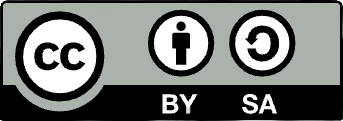

<!DOCTYPE html>
<html>
	<head>
		<meta charset="utf-8">
		<title></title>
	</head>
	<body>
	</body>
</html>
<a href="index.html">
	        
</a>
<br>
<font size="6">  
CC BY-SA 4.0 License<br>
全称为 Creative Commons Attribution-ShareAlike 4.0 International Public License（知识共享 版权归属-相同方式共享 4.0 国际 公共许可证），简称为 CC BY-SA 4.0。<br>
适用范围<br>
本许可证适用于自由文化作品，包括但不限于网站、图像、视频、博客、电子文档、书籍、数据集等。<br>
内容摘要<br>
您可以自由地：<br>
共享 — 通过任何媒介和任何形式复制、转载本作品。<br>
改编 — 在任意用途下合成、转换和改造本作品，甚至是商业性的。<br>
只要您遵循许可证条款，版权方就不能收回您的这些权利。<br>
依据下列条款：<br>
注明版权归属 — 您必须附上原始作品的来源及本许可证的链接，同时说明是否修改了原始作品。您可以用任何合理的方式来注明原始作品的版权归属，但是不得以任何方式表明版权方认可您或您的使用。<br>
相同方式共享 — 若您改编了原始作品，则您必须使用和原始作品相同的许可证来分发您的衍生作品。<br>
不得附加限制 — 您不得使用任何法律条款或技术措施，在法律上限制别人做许可证准许的任何事情。<br>
声明：<br>
当你使用本作品中属于公众领域的要素，或当法律有例外或限制条款允许您使用时，您无需遵从本许可证。<br>
不提供担保。本许可证可能不会授予能满足您使用所必须的所有许可，诸如肖像权、隐私权、人格权等可能会限制您如何使用本作品。<br>